1.7.1.3 DevOps 서비스의 Canary 배포 전략으로 배포하기
1.7.1.2 DevOps 서비스의 Blue/Green 배포 전략으로 배포하기에서 만든 Code Repository, Build Pipeline, Trigger 등을 그대로 사용합니다.
여기서는 배포전략으로 변경이 발생하는 Deployment Pipeline만 추가로 새로 만듭니다.
그리고 Build Pipeline의 마지막 단계에서 호출하는 Deployment Pipeline을 기존 Blue/Green에서 Canary Deployment Pipeline으로 변경합니다.
Canary Deployment Pipeline 만들기
CI/CD 중에 빌드된 산출물을 가지고 실제 서버에 배포하는 CD 과정에 해당되는 부분을 Deployment Pipeline을 통해 구성이 가능합니다.
Canary 전략으로 쿠버네티스에 배포하기 위해서는 배포 환경, 배포할 Kubernets Manifest 파일, 배포에 사용될 Kubernetes Namespace 두 개가 필요합니다.
Kubernetes Environment 등록하기
Blue/Green 배포 실습과 동일한 환경을 사용합니다.
Kubernetes에 배포할 manifest 파일 준비
Blue/Green 배포 실습과 동일한 파일을 사용합니다.
Kubernetes에 배포할 네임스페이스 만들기
테스트 버전과 실 서비스가 배포될 2개의 네임스페이스 필요합니다.
-
Cloud Shell을 통해 kubectl 명령이 실행 가능한 환경으로 접속합니다.
-
두 개의 네임스페이스를 생성합니다.
-
예) ns-canary-stage, ns-canary-prod
kubectl create ns ns-canary-stage kubectl create ns ns-canary-prod -
원활한 테스트를 위해 이전 Blue/Green 용 네임스페이스를 미리 삭제합니다.
kubectl delete ns ns-blue kubectl delete ns ns-green
-
-
OCIR에서 이미지 가져오기
OCIR 리파지토지(예시, webpage)가 사전에 없는 경우 Root Compartment에 Private 형태로 만들어집니다. OKE에서 가져오기 위해서는 각각 네임스페이스에 imagepullsecret을 사전에 생성하거나, 리파지토리를 미리 Public으로 생성합니다.
Canary 전략으로 Kubernetes 배포 Stage 만들기
-
프로젝트 페이지로 이동하여 왼쪽 메뉴의 Deployment Pipelines로 이동합니다.
-
Create pipeline을 클릭하여 파이프라인을 생성합니다.
- Name: 예) webpage-canary-deployment-pipeline
-
생성된 파이프라인을 클릭하여 Canary Strategy Stage를 추가합니다.
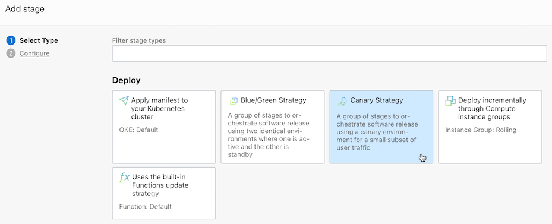
-
배포 유형을 OKE로 선택하고, 배포환경 및 manifest 파일을 선택합니다.
-
Canary 배포를 위한 추가 설정을 합니다.
-
Canary namespace: 테스트 버전이 배포될 네임스페이스 이름을 입력합니다.
- 예) ns-canary-stage
-
NGINX ingress namespace: 배포 manifest 파일에서 정의한 배포 앱의 ingress 자원 이름을 입력합니다.
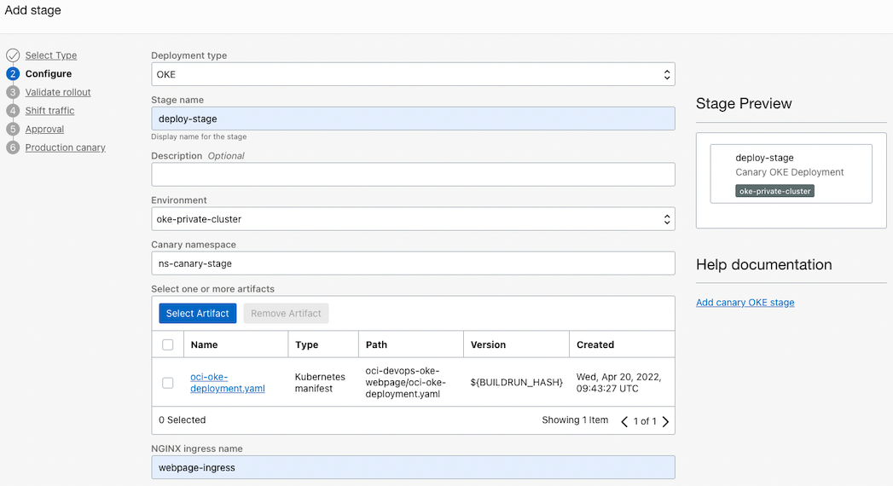
-
-
Shift traffic: 트래픽 전환용 스테이지를 추가합니다.
- Name: 예) shift-traffic-stage
- Ramp Limit: 전체 요청중 테스트 버전에게 전달할 비중을 퍼센트로 입력합니다. 예) 25 퍼센트
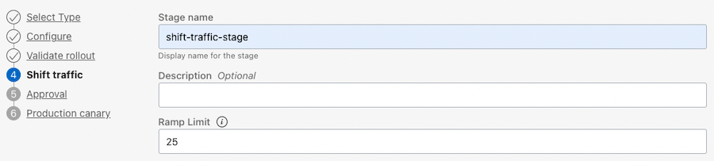
-
Approval: 배포까지만 자동으로 진행하고, 승인후 트래픽을 전환하기 위해 추가합니다. 트래픽 전환 스위치 정도라고 생각하면 될 것 같습니다.
- Name: 예) approval-stage
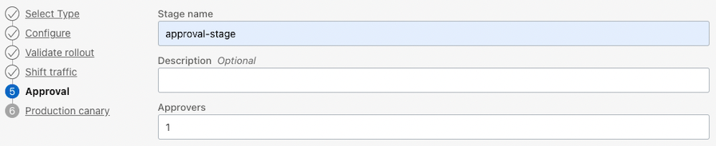
-
Production canary
- Name: 예) switch-to-production-stage
- Production namespace: 실 서비스 버전이 배포될 네임스페이스 이름을 입력합니다.
- 예) ns-canary-prod
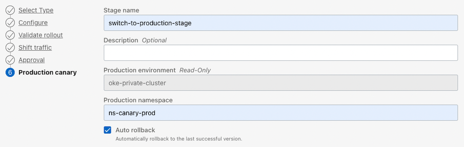
-
설정이 완료되면 다음과 같은 파이프라인이 완성됩니다.
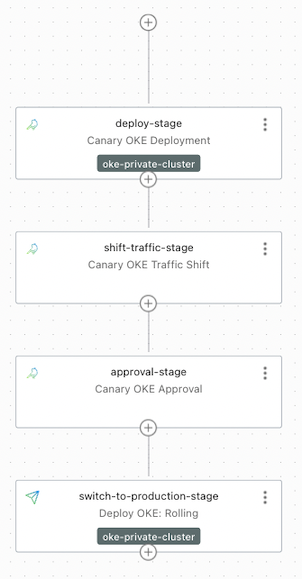
Build Pipeline에서 Deployment Pipeline 호출하기
앞서 만든 Build Pipeline이 끝나고, 배포가 될수 있도록 Deployment Pipeline 호출을 추가합니다.
-
앞서 만든 Build Pipelines으로 이동합니다.
-
파이프라인 마지막에 Trigger Deployment Stage의 오른쪽 점 세개 클릭 > View details를 선택합니다.
-
수정을 위해 Edit Stage를 선택합니다.
-
Select deployment pipeline을 클릭하여 새로 만든 Canary 배포용 Deployment Pipeline로 변경 저장합니다.
-
빌드후 배포하는 전체 흐름이 완료되었습니다.
테스트 - 최초 앱 배포
-
Trigger에서 지정한 oci-devops-oke-webpage 소스 코드에 임의의 변경사항을 발생시키고 Code Repository에 반영합니다.
-
작업중인 코드가 있는 Cloud Shell로 이동합니다.
-
html/index.html을 변경해도 되지만, 편의상 환경변수로 해놓은 Dockerfile을 변경합니다.
-
현재 설정 기준으로 변경사항을 발생시키고 코드를 Commit 후 Push 합니다.
... ENV VERSION="2.0" ENV MESSAGE="Hello OCI DevOps Canary" ENV BACKGROUND="blue" ... -
Trigger가 되고 빌드가 시작됩니다.
-
빌드가 성공하고, 배포 파이프라인이 실행하다, approval-stage에서 대기합니다.
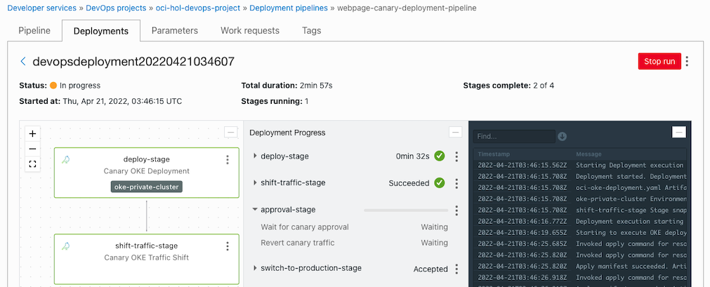
-
쿠버네티스 배포 상태를 확인합니다. ns-canary-stage에만 배포된 것을 알 수 있습니다.
[opc@jumpbox-945115 oci-devops-oke-webpage]$ kubectl get all,ingress -n ns-canary-stage NAME READY STATUS RESTARTS AGE pod/webpage-deployment-9bff68bcf-7bjk2 1/1 Running 0 4m24s pod/webpage-deployment-9bff68bcf-d8pwq 1/1 Running 0 4m24s pod/webpage-deployment-9bff68bcf-v76nt 1/1 Running 0 4m24s NAME TYPE CLUSTER-IP EXTERNAL-IP PORT(S) AGE service/webpage-service ClusterIP 10.96.35.238 <none> 8080/TCP 4m24s NAME READY UP-TO-DATE AVAILABLE AGE deployment.apps/webpage-deployment 3/3 3 3 4m24s NAME DESIRED CURRENT READY AGE replicaset.apps/webpage-deployment-9bff68bcf 3 3 3 4m24s NAME CLASS HOSTS ADDRESS PORTS AGE ingress.networking.k8s.io/webpage-ingress <none> * 146.56.118.147 80 4m23s [opc@jumpbox-945115 oci-devops-oke-webpage]$ kubectl get all,ingress -n ns-canary-prod No resources found in ns-canary-prod namespace. -
실행중인 배포 파이프라인으로 돌아가 approval-stage에서 승인합니다.
-
승인이 되면 Procution namespace인 ns-canary-prod에도 배포됩니다.
[opc@jumpbox-945115 oci-devops-oke-webpage]$ kubectl get all,ingress -n ns-canary-stage NAME READY STATUS RESTARTS AGE pod/webpage-deployment-9bff68bcf-7bjk2 1/1 Running 0 8m2s pod/webpage-deployment-9bff68bcf-d8pwq 1/1 Running 0 8m2s pod/webpage-deployment-9bff68bcf-v76nt 1/1 Running 0 8m2s ... [opc@jumpbox-945115 oci-devops-oke-webpage]$ kubectl get all,ingress -n ns-canary-prod NAME READY STATUS RESTARTS AGE pod/webpage-deployment-9bff68bcf-4v962 1/1 Running 0 2m14s pod/webpage-deployment-9bff68bcf-9w7d5 1/1 Running 0 2m14s pod/webpage-deployment-9bff68bcf-tqcck 1/1 Running 0 2m14s NAME TYPE CLUSTER-IP EXTERNAL-IP PORT(S) AGE service/webpage-service ClusterIP 10.96.132.13 <none> 8080/TCP 2m14s NAME READY UP-TO-DATE AVAILABLE AGE deployment.apps/webpage-deployment 3/3 3 3 2m14s NAME DESIRED CURRENT READY AGE replicaset.apps/webpage-deployment-9bff68bcf 3 3 3 2m14s NAME CLASS HOSTS ADDRESS PORTS AGE ingress.networking.k8s.io/webpage-ingress <none> * 146.56.118.147 80 2m13s -
Ingress 주소를 통해 웹페이지에 접속하면, 현재 Blue 앱이 잘 동작하는 것을 볼수 있습니다.
- 주소 예) http://146.56.118.147/webpage
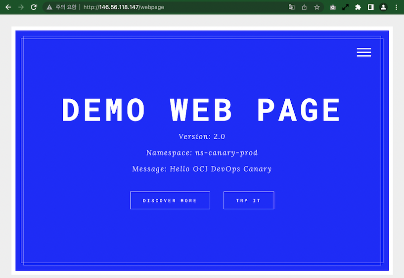
테스트 - 새 버전 배포 - Green 버전
-
소스로 돌아가서 코드를 변경(예시, Dockerfile의 환경변수 변경)하고 Commit & Push 하여 코드를 반영합니다
... ENV VERSION="2.1" ENV MESSAGE="Hello OCI DevOps Canary" ENV BACKGROUND="green" ... -
다시 빌드, 배포 파이프라인이 실행되고 approval-stage에서 멈출때까지 기다립니다.
-
쿠버네티스 배포 상태를 확인합니다.
ns-canary-stage에 새 버전이 배포된 것을 알 수 있습니다.
[opc@jumpbox-945115 oci-devops-oke-webpage]$ kubectl get pod -n ns-canary-stage NAME READY STATUS RESTARTS AGE webpage-deployment-6d8b64947b-2hqm6 1/1 Running 0 2m33s webpage-deployment-6d8b64947b-dtl99 1/1 Running 0 2m19s webpage-deployment-6d8b64947b-rqtpg 1/1 Running 0 2m26s [opc@jumpbox-945115 oci-devops-oke-webpage]$ kubectl get pod -n ns-canary-prod NAME READY STATUS RESTARTS AGE webpage-deployment-9bff68bcf-4v962 1/1 Running 0 13m webpage-deployment-9bff68bcf-9w7d5 1/1 Running 0 13m webpage-deployment-9bff68bcf-tqcck 1/1 Running 0 13m -
ns-canary-stage내의 webpage-ingress의 annotations에서 보면 canary-weight: “25“로 변경된 걸 볼 수 있습니다.
[opc@jumpbox-945115 oci-devops-oke-webpage]$ kubectl get ingress webpage-ingress -n ns-canary-stage -o yaml apiVersion: networking.k8s.io/v1 kind: Ingress metadata: annotations: kubernetes.io/ingress.class: nginx nginx.ingress.kubernetes.io/canary: "true" nginx.ingress.kubernetes.io/canary-by-header: redirect-to-canary nginx.ingress.kubernetes.io/canary-weight: "25" nginx.ingress.kubernetes.io/rewrite-target: /$2 ... [opc@jumpbox-945115 oci-devops-oke-webpage]$ kubectl get ingress webpage-ingress -n ns-canary-prod -o yaml apiVersion: networking.k8s.io/v1 kind: Ingress metadata: annotations: kubernetes.io/ingress.class: nginx nginx.ingress.kubernetes.io/rewrite-target: /$2 ... -
웹페이지에 접속합니다. 25%의 확률로 ns-canary-stage에 있는 새 버전으로 요청됩니다.
-
실행중인 배포 파이프라인으로 돌아가 approval-stage에서 승인합니다.
-
쿠버네티스 배포 상태를 다시 확인합니다.
ns-canary-stage는 그대로 이고, ns-canary-prod로 새 버전이 배포된 것을 알 수 있습니다.
[opc@jumpbox-945115 oci-devops-oke-webpage]$ kubectl get pod -n ns-canary-stage NAME READY STATUS RESTARTS AGE webpage-deployment-6d8b64947b-2hqm6 1/1 Running 0 19m webpage-deployment-6d8b64947b-dtl99 1/1 Running 0 18m webpage-deployment-6d8b64947b-rqtpg 1/1 Running 0 19m [opc@jumpbox-945115 oci-devops-oke-webpage]$ kubectl get pod -n ns-canary-prod NAME READY STATUS RESTARTS AGE webpage-deployment-6d8b64947b-fxnf8 1/1 Running 0 117s webpage-deployment-6d8b64947b-lm44m 1/1 Running 0 2m4s webpage-deployment-6d8b64947b-zv8p8 1/1 Running 0 111 -
ns-canary-stage내의 webpage-ingress의 annotations에서 보면 canary-weight: “0“로 변경된 걸 볼 수 있습니다.
[opc@jumpbox-945115 oci-devops-oke-webpage]$ kubectl get ingress webpage-ingress -n ns-canary-stage -o yaml apiVersion: networking.k8s.io/v1 kind: Ingress metadata: annotations: kubernetes.io/ingress.class: nginx nginx.ingress.kubernetes.io/canary: "true" nginx.ingress.kubernetes.io/canary-by-header: redirect-to-canary nginx.ingress.kubernetes.io/canary-weight: "0" nginx.ingress.kubernetes.io/rewrite-target: /$2 ... [opc@jumpbox-945115 oci-devops-oke-webpage]$ kubectl get ingress webpage-ingress -n ns-canary-prod -o yaml apiVersion: networking.k8s.io/v1 kind: Ingress metadata: annotations: kubernetes.io/ingress.class: nginx nginx.ingress.kubernetes.io/rewrite-target: /$2 ... -
웹페이지에 접속합니다. 이제 새 버전이 배포된 ns-canary-prod 쪽으로만 요청됩니다.
ns-canary-stage 쪽에는 액세스 로그로 확인해도 요청사항이 없습니다.
[opc@jumpbox-945115 oci-devops-oke-webpage]$ kubectl logs -lapp=webpage -n ns-canary-stage -f ...
테스트 - 추가적인 변경 사항 배포 - Red 배포
-
소스로 돌아가서 코드를 변경(예시, Dockerfile의 환경변수 변경)하고 Commit & Push 하여 코드를 반영합니다
... ENV VERSION="2.2" ENV MESSAGE="Hello OCI DevOps Canary" ENV BACKGROUND="red" ... -
다시 빌드, 배포 파이프라인이 실행되고 approval-stage에서 멈출때까지 기다립니다.
-
쿠버네티스 배포 상태를 확인합니다.
ns-canary-stage에 새 버전이 배포된 것을 알 수 있습니다.
[opc@jumpbox-945115 oci-devops-oke-webpage]$ kubectl get pod -n ns-canary-stage NAME READY STATUS RESTARTS AGE webpage-deployment-79fd4f869b-2kvn4 1/1 Running 0 98s webpage-deployment-79fd4f869b-khbvk 1/1 Running 0 110s webpage-deployment-79fd4f869b-vwzmn 1/1 Running 0 91s [opc@jumpbox-945115 oci-devops-oke-webpage]$ kubectl get pod -n ns-canary-prod NAME READY STATUS RESTARTS AGE webpage-deployment-6d8b64947b-fxnf8 1/1 Running 0 23m webpage-deployment-6d8b64947b-lm44m 1/1 Running 0 23m webpage-deployment-6d8b64947b-zv8p8 1/1 Running 0 23m -
ns-canary-stage내의 webpage-ingress의 annotations에서 보면 canary-weight: “25“로 변경된 걸 볼 수 있습니다.
[opc@jumpbox-945115 oci-devops-oke-webpage]$ kubectl get ingress webpage-ingress -n ns-canary-stage -o yaml apiVersion: networking.k8s.io/v1 kind: Ingress metadata: annotations: kubernetes.io/ingress.class: nginx nginx.ingress.kubernetes.io/canary: "true" nginx.ingress.kubernetes.io/canary-by-header: redirect-to-canary nginx.ingress.kubernetes.io/canary-weight: "25" nginx.ingress.kubernetes.io/rewrite-target: /$2 ... -
웹페이지에 접속합니다. 25%의 확률로 ns-canary-stage에 있는 새 버전으로 요청됩니다.
-
approval-stage에서 승인을 하면, 이전과 동일한 방식으로, ns-canary-prod로 새 버전이 배포되고, 모든 요청은 새 버전으로 전달됩니다.
-
approval-stage에서 거부하면, ns-canary-stage쪽 가중치가 canary-weight: “0“으로 변경되어, 테스트 버전으로 요청은 중지됩니다.
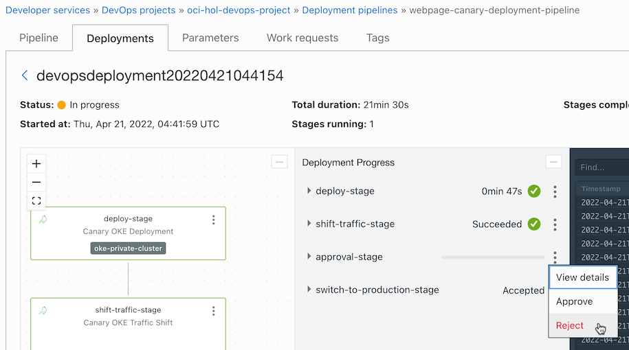
[opc@jumpbox-945115 oci-devops-oke-webpage]$ kubectl get ingress webpage-ingress -n ns-canary-stage -o yaml apiVersion: networking.k8s.io/v1 kind: Ingress metadata: annotations: kubernetes.io/ingress.class: nginx nginx.ingress.kubernetes.io/canary: "true" nginx.ingress.kubernetes.io/canary-by-header: redirect-to-canary nginx.ingress.kubernetes.io/canary-weight: "0" nginx.ingress.kubernetes.io/rewrite-target: /$2 ...
테스트 - 롤백
신규 버전으로 서비스를 하다, 문제가 발생하면 이전 버전으로 롤백이 기능합니다.
-
배포 히스토리 중에서 현재 버전을 배포한 배포 파이프라인으로 이동합니다.
-
Traffic Shift 메뉴 중에서 Revert traffic shift를 클릭합니다.
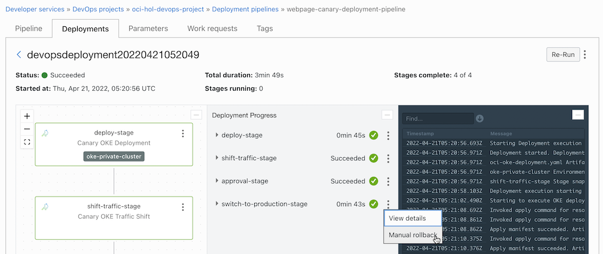
-
히스토리 중에 복구할 것을 선택합니다.
-
히스토리 중에서 선택
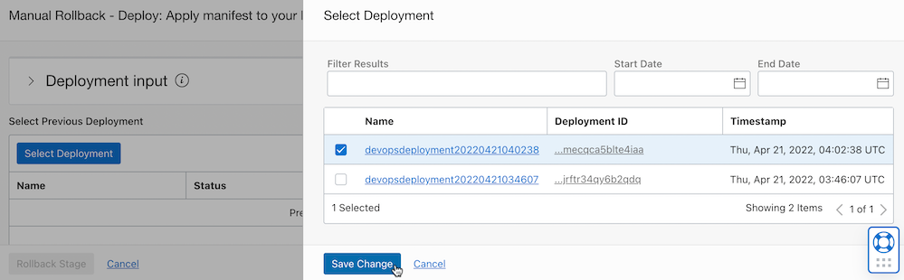
-
뭐가 뭔지 알고 고르나 싶지만, 일단 고르자.
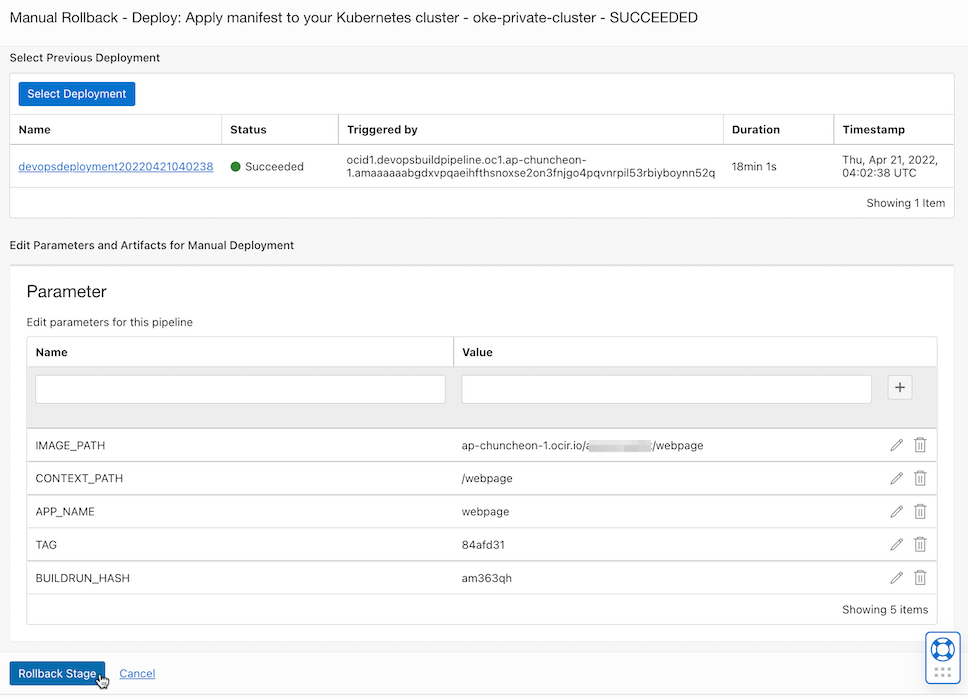
-
-
수동 롤백 작업이 완료되었습니다.
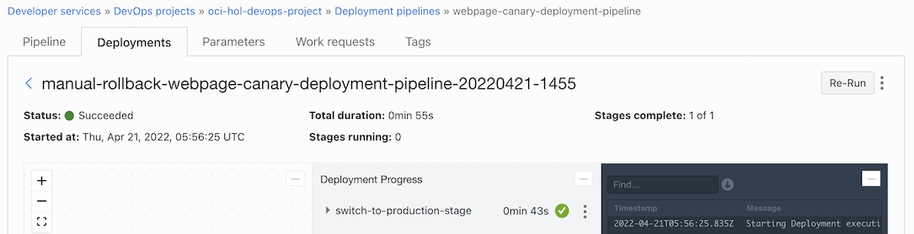
-
웹페이지에 접속하면, 이전 앱으로 복귀된 것을 볼 수 있습니다.
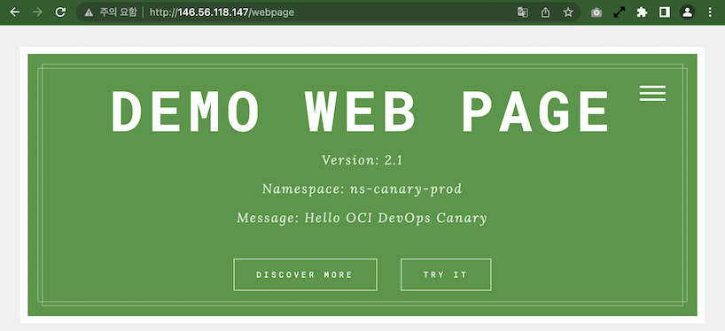
이 글은 개인으로서, 개인의 시간을 할애하여 작성된 글입니다. 글의 내용에 오류가 있을 수 있으며, 글 속의 의견은 개인적인 의견입니다.